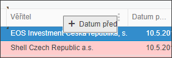

Přesouvání sloupců v seznamu
Sloupce je možné přesouvat na jinou pozici na obrazovce tím, že se chytí myší za nadpis a tažením se přesune na jiné místo. Viz obrázek - přesun Datumu předání před sloupec Věřitele.

Zrušení všech přesunů je popsáno níže.